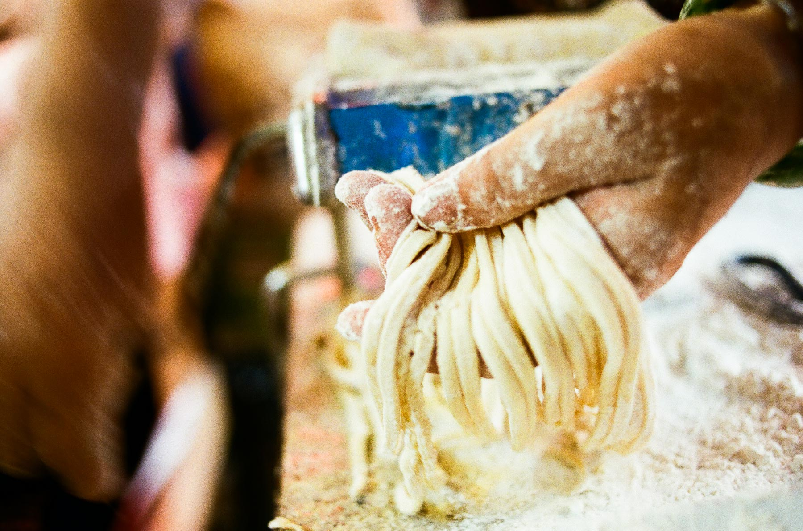
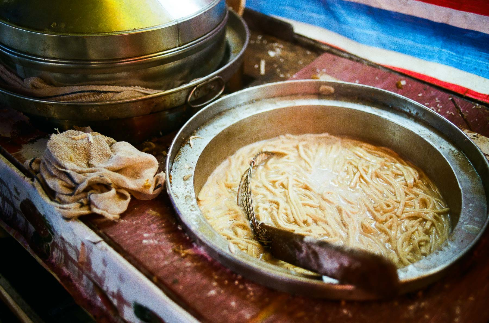
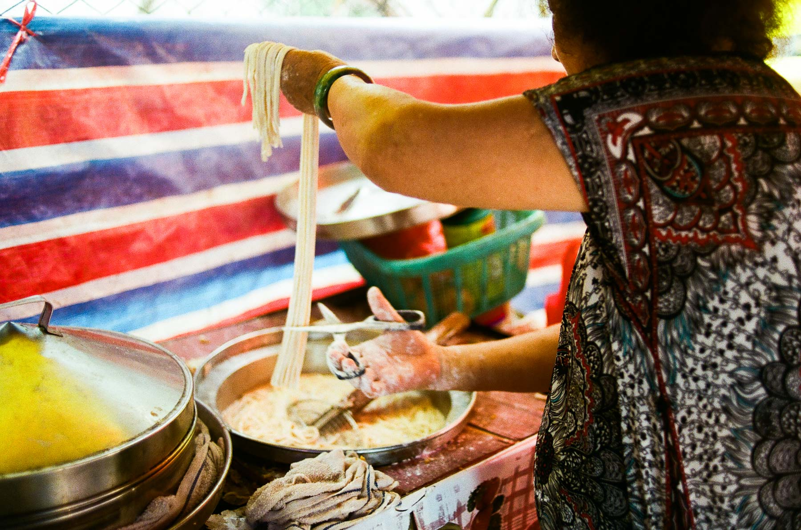
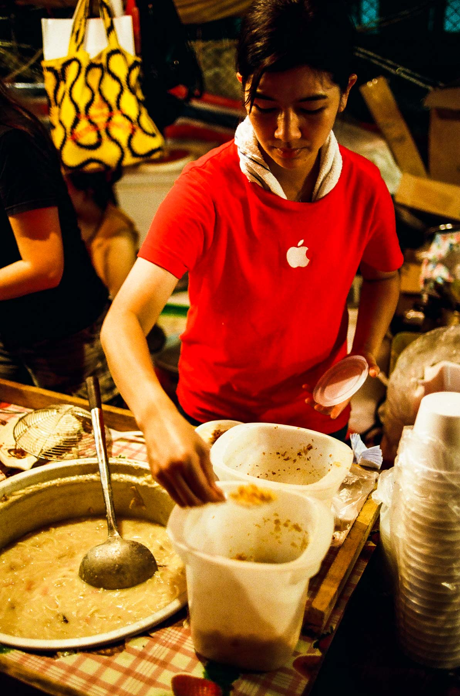
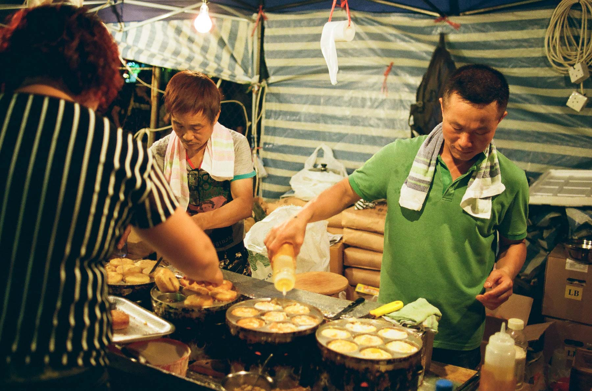
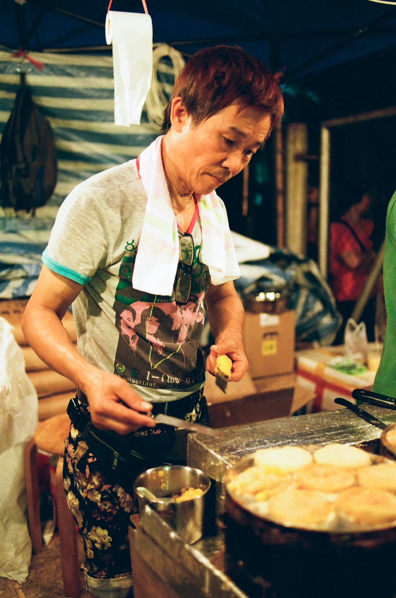
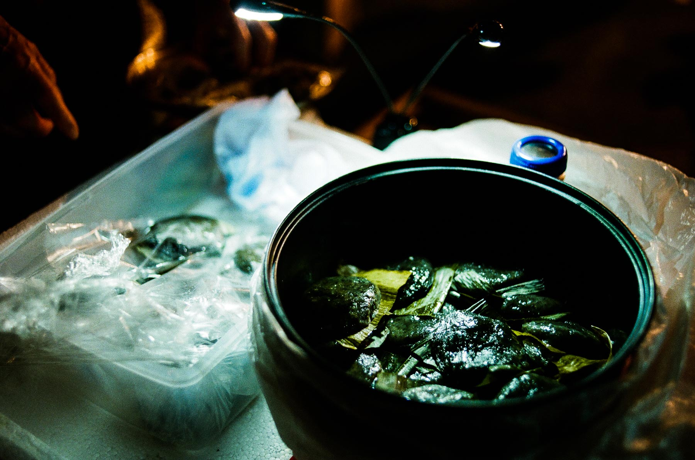
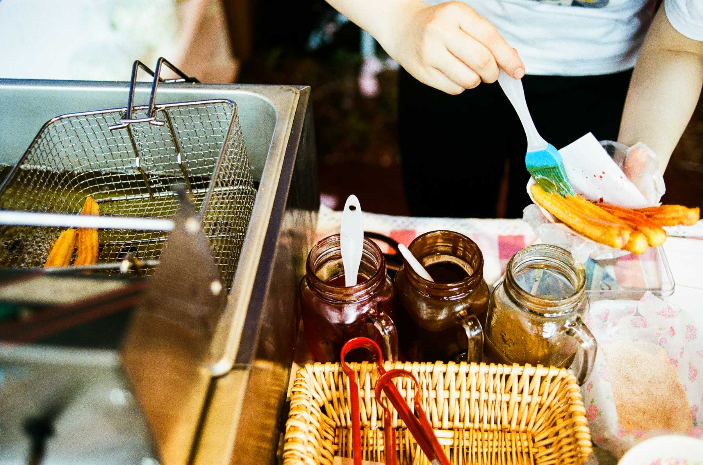
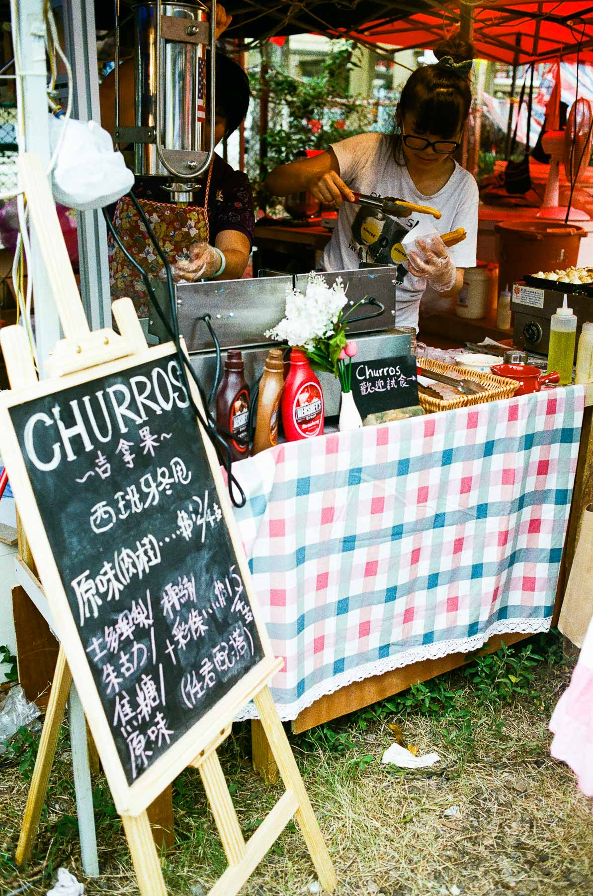

一年一度的期間限定本地小食
每年的農曆三月十二至十六是青衣的真君誕，除了有一連串的慶祝活動和大戲上演外，大家更加關注的是期間限定的熟食市場！我最近幾年都有去尋寶，適逢下星期一至五就是今年的誕期，向大家介紹幾個本地小食。

梨木樹狗仔粉
據說香港一間狗仔粉食店的老闆，懷念以前在梨木樹吃狗仔粉的味道，自己研發開店，現在賣到成行成市，還得到車軩人推介。梨木樹狗仔粉現在去了那裏？在青衣真君誕你可以找得到。
這裏有兩三檔賣狗仔粉，但只有這一檔在現場製作狗仔粉，事頭婆在檔攤深處，利用手攪意粉機，製作出一條條的狗仔粉。她說狗仔粉的材料很簡單，只有麵粉、蛋和水，搓成麵團後壓平，然後慢慢將麵粉團重覆地壓成薄片。
壓成厚薄適中的麵團後，經過電動切麵機後便成為一條條的長麵條，最後用較剪剪成較短的狗仔粉，放在湯中烚熟。


事頭婆的女兒們跟我說，湯頭用了豬骨、冬菇、蝦米煲成，再加上火腿和豬油渣，最後還可以選擇加辣或甜的菜脯！

經過繁複的步驟，煮成一碗的狗仔粉，美味無窮，所有材料的香味也能嚐到，事頭婆女兒推介加辣菜脯，更增鮮味。很多時吃到的狗仔粉很軟，但這裏的軟厚適中，令人回味！

豬肉蛋漢堡
一年去到「青衣夜市」，都會見到一檔大排長龍，聽說是食豬肉蛋漢堡。
初初聽到這個名字，還以為是美式快餐店的食物！不過這個小食我只是在青衣真君、天后誕見過，其實是煎蛋+豬肉+粉漿混合而成，形狀有點像漢堡的小食。

其中一個人是住在青衣的鶴佬人，每年都在青衣擺兩次檔，間中會在荃灣路德圍擺檔。
跟他說起社會的問題，他說後生仔去甚麼七一遊行，一定背後有收錢，如果唔係點會日曬雨淋都去。又說藍黃絲其實只是兩邊鬥多錢！
他又說在北區走水貨的人有八成係福建、鶴佬、潮州人，叫我去到上水講潮州話就溝通到！
說回這個小食，灑了椒鹽的豬肉蛋漢堡味道可口，略嫌油膩，不過一年食一次無所謂啦！

雞屎藤茶果 / 清明仔
每逢清明節，大埔都會有特別多「清明仔」賣，是用雞屎藤或艾草造成一粒粒細件的茶果，大件的好像不會叫清明仔。在夜市球場入口附近，有一個婆婆在賣雞屎藤，她說她在梅窩一間學校上班，到春天就會在那裏摘雞屎藤，製造茶果。
買了兩個茶果吃，味道清新，不會很甜，重點是茶果的粉團很軟滑！平時在大埔買了茶果都是很硬又不滑！試完還幫襯了多幾個，拿回家給家人吃呢！

Churro
這家Churro是去年才出現的，一心想以為有西班牙的Churro吃，店主說Churro近年在韓國興起，和西班牙的有點不同。經過油炸的甜麵條搽上朱古力醬、士多啤梨醬等，再加上椰絲，女生們應該很喜歡吃！我就最喜歡搽上焦糖的Churro了！

以上的介紹、小食都是去年的青衣真君誕遇到的，不知道今年又有沒有呢？